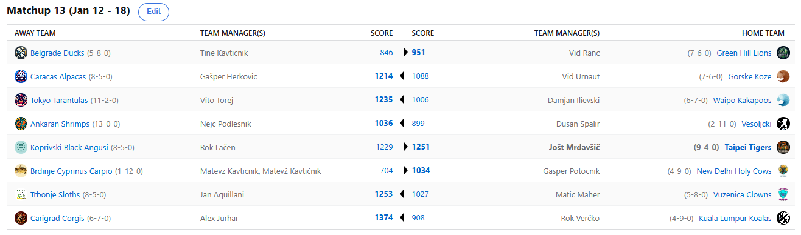

SEZONA 24/25
- Pravila in sistem tekmovanja
- Matchup1 (Oct 22 - Oct 27)
- Matchup2 (Oct 28 - Nov 3)
- Matchup3 (Nov 4 - Nov 10)
- Matchup4 (Nov 11 - Nov 17)
- Matchup5 (Nov 18 - Nov 24)
- Matchup6 (Nov 25 - Dec 1)
- Matchup7 (Dec 2 - Dec 8)
- Matchup8 (Dec 9 - Dec 15)
- Matchup9 (Dec 16 - Dec 22)
- Matchup10 (Dec 23 - Jan 29)
- Matchup11 (Dec 30 - Jan 5)
- Matchup12 (Jan 6 - Jan 12)
- Matchup13 (Jan 13 - Jan 19)
- Matchup14 (Jan 20 - Feb 26)
- Matchup15 (Jan 27 - Feb 2)
- Play-in (Feb 3 - Feb 23)
- Playoff 1 (Feb 24 - Mar 9)
- Playoff 2 (Mar 10 - Mar 23)
- Playoff 3 (Mar 24 - Apr 6)
2024/25 - Fantasy Koroška - sezona 8
MATCHUP 13 (Jan 13 - Jan 19)
Poročilo kroga
Z osmimi tekmami, ki jih je v ranem terminu zrihtal Martin Luther King odpiramo že 13. teden fantasy sezone. Odprta so še vprašanja o BYE-u in o dveh donatorjev Gajbe,
medtem ko se praktično za nobeno končno uvrstitev na sredini lestvice ne ve točno, kdo bo končal kje. Ker imajo naši novinarji danes izpit iz varstva pri delu smo
nekoliko v zaostanku z recapom a nič ne de!
Stavnice so predictions mejo 2350 postavile odlično in samo dva matchupa sta jo uspela preseči. Eden izmed njih je bil vedno zanimivi obračun Bundoranskih Kobr in Lagoških Ježkov.
Pričakovali smo kaj več trashtalka na tej vekomaj naelektreni relaciji, a očitno je Nejc vso jezo raje stresal v flejmanje Kamerunčka, namesto da bi jo usmeril v
svojega nasprotnika. Vetovček1 in Vetovček2 sta se tako razšla z novo zmago za Hedgehogse, ki se kljub slabšemu začetku zdaj že bohotijo na 5. mestu razpredelnice
in imajo vse niti v svojih rokah pri »izbiranju« nasprotnika za play-in fazo.
Drugi obračun, ki se je končal z overjem, pa je bil derbi Tarantel in Tigrov. Vito je uspel s trejdom pridobiti nekaj tekem in prav Wallace ter Janis sta ga nekje do polovice držala v
igri, a vendarle je Japonski franšizi zmanjkalo moči in Tigri so na koncu dokaj gladko slavili. Vito je s tem porazom kar precej izgubil na lestvici a je še vseeno v
zgornji polovici in mu gre za rookija celo zelo dobro, bosta pa twin towerja AD in Janis vsekakor strah in trepet moštev v končnici. Na drugi strani pa 6. zaporedna
zmaga za Tigerse in le še 2 mora zabeležiti, da si še tretjič v zgodovini zagotovi BYE.
Najtesneje je bilo v obračunu med Kozami in Koalami. Zanimivo, da je bil ta matchup največkrat izglasovan za OVER, a sta vendarle oba nekoliko razočarala. Na koncu je na krilih debelega
Srba novo zmago zabeležil Verčko in se s tem vrnil v deseterico. Vid še naprej ne najde prave forme, kot tudi ne merila za redčenje soka in vode pri malici. Vendarle
pa je bilo nekaj svetlih točk za njegove Koze v tem tednu in na tem je treba graditi.
Kaj reči za Maherja? Še vedno zaseda prvo mesto na lestvici najbolj unlucky managerjev lige, a zdaj stvari vendarle postavlja na svoje mesto. Big3 Jalena Greena, Vucevica in Hardna je
tako rekoč sam skorajda zbral toliko točk kot vsi Angusi skupaj in to je bila tako enostavna zmaga kot je Matic ne pomni. Kdaj smo se nazadnje tako bali moštva z
izkupičkom 6-7? Najbrž nikoli in videli bomo, kako se bodo razvrstila moštva tam v sredini lestvice, se bo morda kdo poskušal Klovnom izogniti? Najprijaznejši
posojevalec košarkarske obutve, ki še vedno trpi za posledicami in si je zdaj že dodobra zapomnil pregovor »dobrota je sirota« pa je v hudih težavah. Kaj še lahko
stori, da bi se rešil v playoff? Stavnice mu pripisujejo pičlih 32% možnosti, bo pa moral za uspeh in vsaj play-in stage premagati enega izmed Alpak in Tigrov,
ki pa so trenutno oboji na podiumu in kaj takega vsekakor ne bo lahka naloga.
Protikorupcijska komisija je bila že prejšnji recap obveščena o sumljivem obračunu med Ranacom in Tinki Binkijem. Slednji je kakopak s težavo našel gumb QUICK LINEUP, ki ga je iskal
vse do torka in tako na začetku podaril nekaj prednosti svojemu bestiju. Ranac, ki sicer trdi, da ni prišlo do nobenega dogovora, pa je darilo sprejel odprtih rok
in prišel do svoje 4. zmage. Ta mu zdaj odpira vrata v playoff, tako rekoč vse ima v svojih rokah. V neposrednem obračunu se bo ta teden pomeril s še enim rookijem –
Dilijem in zmagovalec si bo skoraj 100% uspel priigrati končnico. Mali mali floaterček Tine pa je na drugi strani sicer še na trnih, a razplet po katerem se ne uvrsti
v playoff je res zelo malo verjeten. Bo v slogu včerajšnje tekme vendarle ZAKORAKAL k novi zmagi ta teden?
Znatno je povečal svoje možnosti za playoff tudi Kups, ki se je znašel v kar hudih težavah, a jih je ta teden najbrž uspešno rešil z zmago proti Kavtu. Ni se rabil niti pretirano namučiti
in videli bomo, ali se lahko do playoffa toliko sestavi, da se tam ne bo pojavil zgolj za število. Kaj pa bi na drugi strani povedali o Matevžu …. Najbrž velja omeniti,
da je Matevž prvi, ki mu je uspelo doživeti poškodbo čeljusti, ki je posledica pretiranega gobcanja. Šalo na stran, hitro okrevanje želimo Matonu, ki si je najbrž tu
zdaj zapomnil za vse večne čase, da z odprtimi usti v ramo nasprotnika … ni dobra ideja. Izbruh jeze, prvi O s strani SGA-ja in primerjava logotipa z posledicami Wiki
Waki Wuhuhuja so le nekatere izmed stvari, ki jih bo v tem napornem tednu Tevži poskušal čimprej pozabiti. Se lahko po hitrem postopku sestavi in po tem ko je bitko za
BYE izgubil, vsaj resno zmeša štrene v končnici, kot je to počel prvih 7 tednov sezone?
Dva headlinerja BYE in Gajba battla, Duka in Dili, pa sta se pomerila v pomembnem obračunu. Vendarle je vlogo favorita upravičil Dule in zabeležil novo, že 10. zmago. S tem še naprej drži
prvo mesto in le 2 zmagi v rednem delu ga ločita od 20€ in titule za prvaka rednega dela. Ni bilo sicer tako gladko, kot bi človek pričakoval, a vendarle. Na drugi strani
je Damjan štedil z močmi in denarci v tem tednu in svoje misli že usmeril v neposredni obračun, ki mu lahko prinese končnico. Zadnji vlak v nedeljo štarta s postaje, a
kdo bo potnik na njem? Dili ali Ranac?
Skoraj smo pozabili na obračun za naziv najjačega Gašperja lige, ki ga je z zanimanjem pospremil tudi Luža. Vendarle je primat ohranil Herko, ki je Potočnikovega ugnal v kozji rog z
zanesljivo razliko. Še vedno diha za ovratnik vodilnima dvema in čaka na kiks katerega izmed njiju, ki bi mu lahko ob dveh zmagah prinesel BYE. Sicer dvomimo, da ga
bo dočakal a garantirano tretje mesto in play-in obračun proti tistemu, ki se skozi šivankino uho prebije v končnico bo prav tako sprejel z odprtimi rokami in najbrž
tam ne bo imel nobenih težav. Kaj reči na drugi strani za Gepsa? Še vedno je na zelo visokem 6. mestu in s svojim BIG3-jem Curry, Sabonis, J-DUB lahko zagreni
življenje prav vsakemu nasprotniku, bi lahko svojemu tokratnemu krvniku naredil uslugo in premagal Tigre?
Kaj nas torej čaka v predzadnjem krogu? Predvsem bo zanimiv obračun Ranca in Dilija, ki smo ga že tolikokrat omenili. Zanimivo bo videti tudi, ali lahko Lačen morda preseneti
Herkona in s tem dodatno zapenčla niti v gajba battlu. Variacij za mesta je preveč in komaj že čakamo na začetek tega tekmovalnega tedna, ki ga že danes
zvečer ob 18. uri odpira žal Dončič-less Dallas.
Srečno vsem, predictioni so že zunaj, a so slabo izpolnjeni.